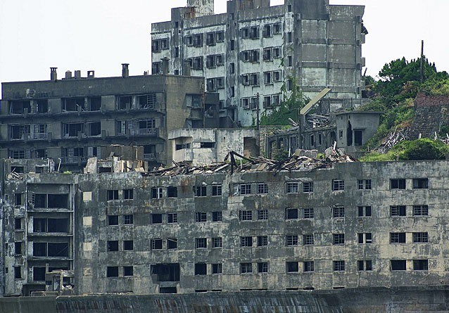

ISLA HASHIMA, JAPÓN
Ahora desierta, la japonesa isla de Hashima fue en su día uno de los sitios con más densidad de población del mundo. Muchas veces llamado Gunkanjima, en español ‘La isla acorazada’, Hashima está totalmente cubierta con edificios. Hasta 1974, en la isla tuvo lugar una operación de extracción de carbón. Los trabajadores y sus familias vivían en enormes edificios que aún se mantienen en pie. Después de estar abandonada más de tres décadas, la isla fue reabierta en 2009 para los turistas. Seguro que has visto la isla, aunque no hayas ido, porque fue el escenario de la película de James Bond estrenada en 2012, Skyfall, pues tuvo lugar la primera confrontación del Agente 007 con su archi-enemigo Raoul Silva, protagonizado por Javier Bardem. La historia de esta ciudad porque siempre la llegado a los suvurvios de los locales japones cuenta la leyenda que cuando esta ciudad estaba habitada por los japoneses que estaban alli porque esta ciudad tenia carbon y cuando se termino la materia tuvieron que irse por sucedieron cosas extrañas. |
 |
Ahora desierta, la japonesa isla de Hashima fue en su día uno de los sitios con más densidad de población del mundo. Muchas veces llamado Gunkanjima, en español ‘La isla acorazada’, Hashima está totalmente cubierta con edificios. Hasta 1974, en la isla tuvo lugar una operación de extracción de carbón. Los trabajadores y sus familias vivían en enormes edificios que aún se mantienen en pie. Después de estar abandonada más de tres décadas, la isla fue reabierta en 2009 para los turistas. Seguro que has visto la isla, aunque no hayas ido, porque fue el escenario de la película de James Bond estrenada en 2012, Skyfall, pues tuvo lugar la primera confrontación del Agente 007 con su archi-enemigo Raoul Silva, protagonizado por Javier Bardem.